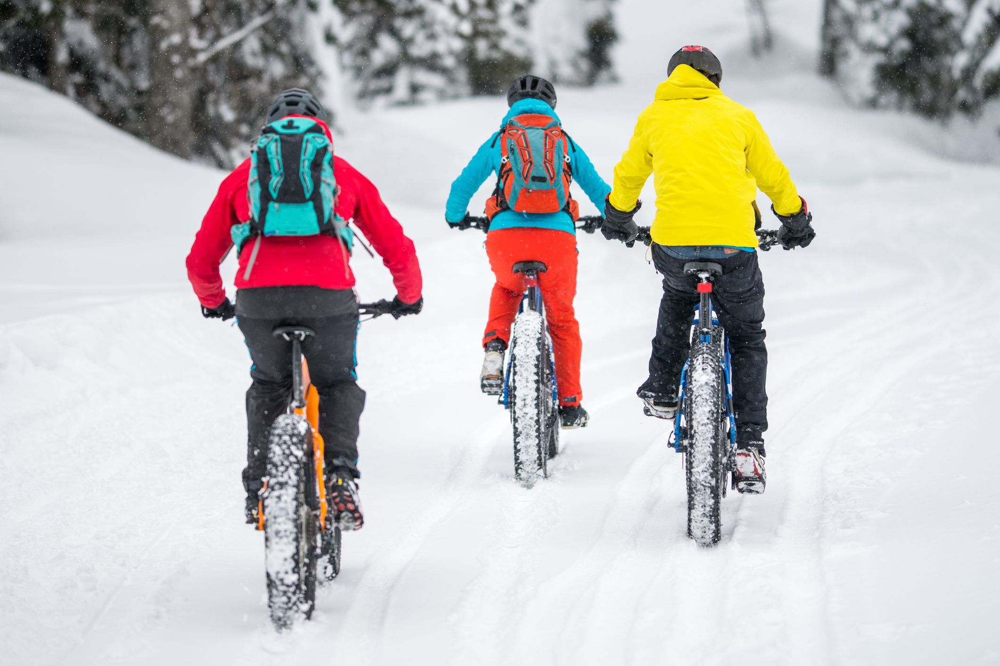
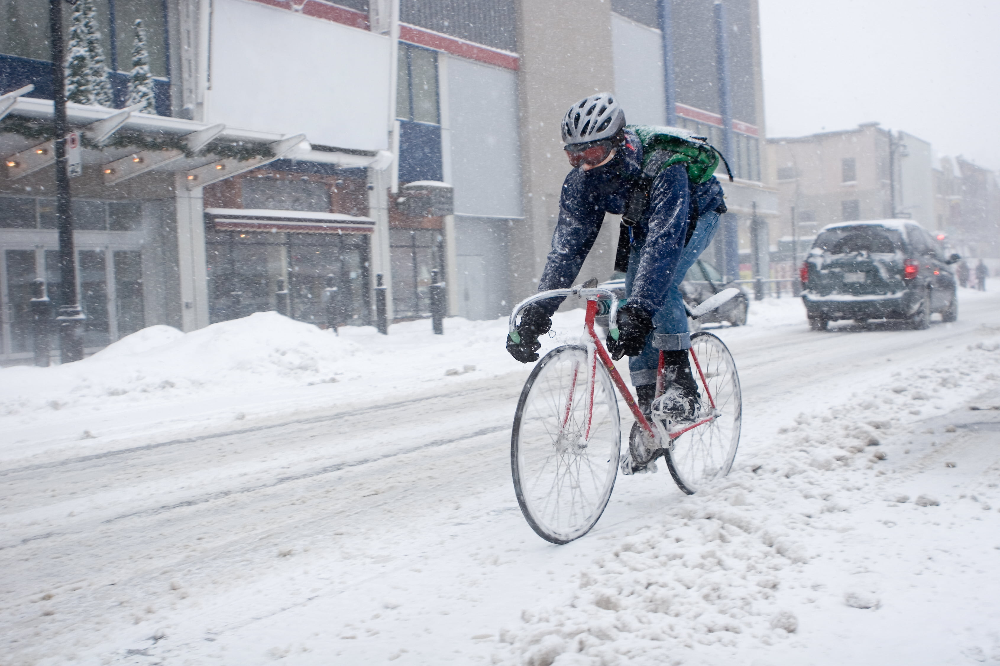
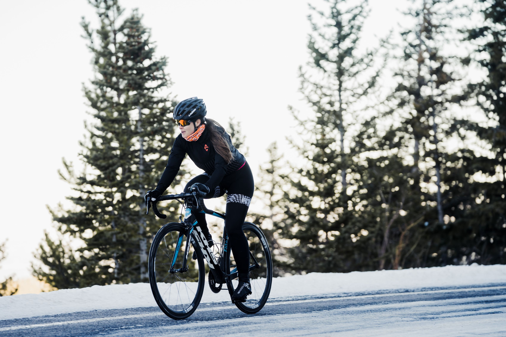
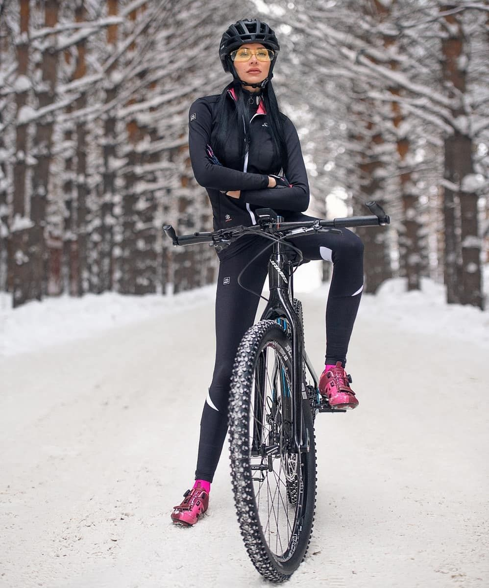
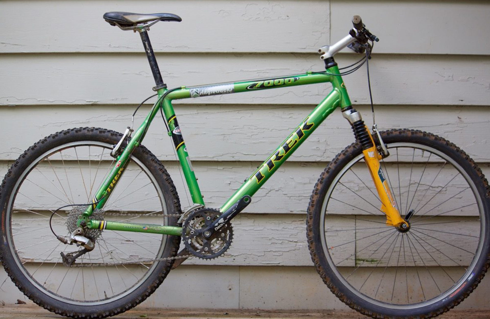
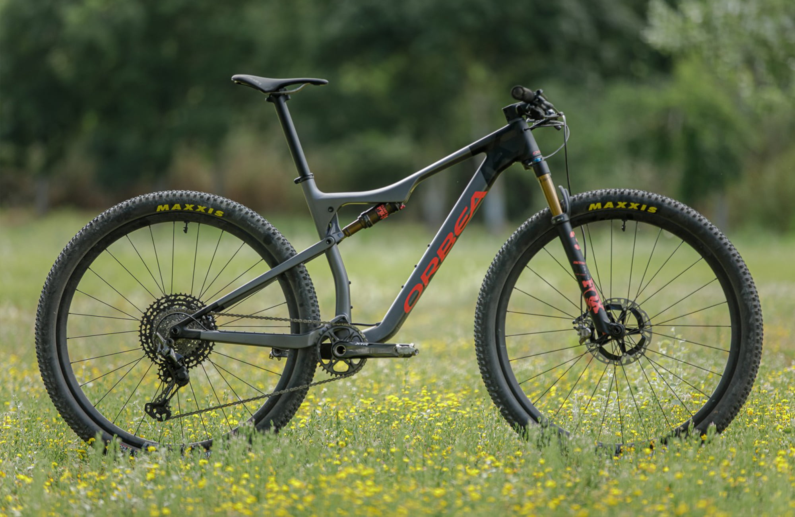
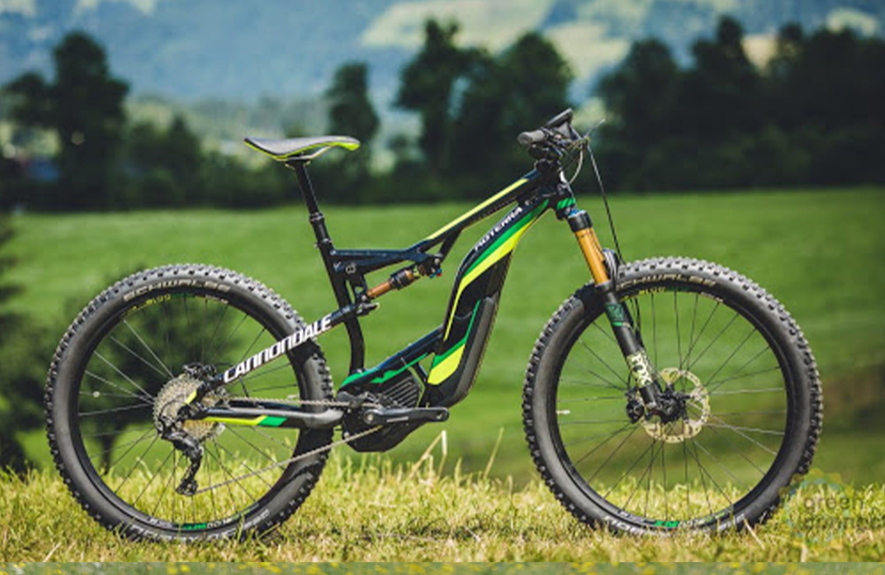
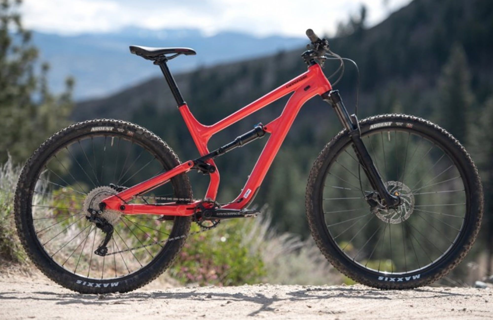
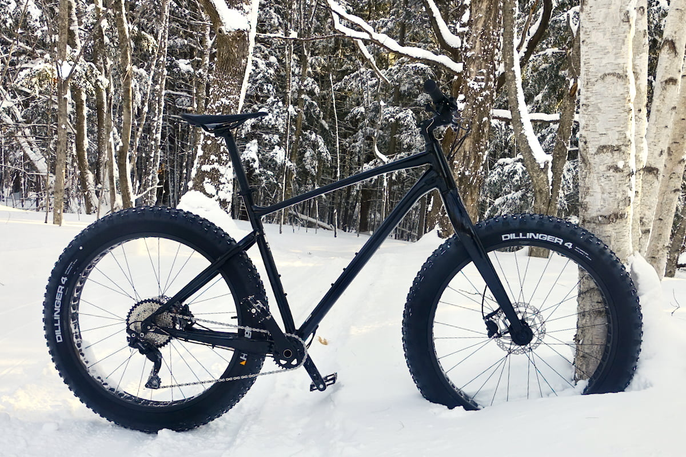
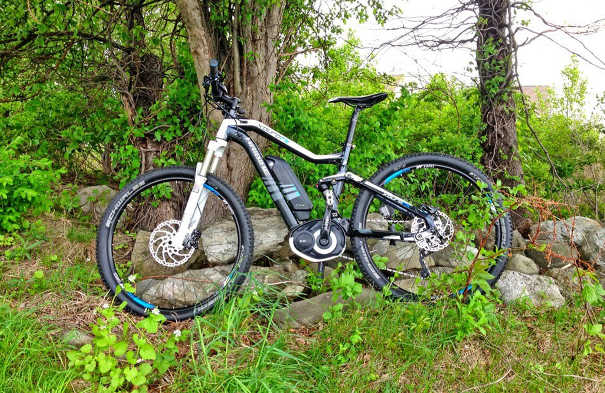

Как ездить на велосипеде зимой
Итак, чем же отличается езда на велосипеде зимой от езды на велосипеде летом?

Сразу приходит в голову снег, конечно же, но снег далеко не всегда сопровождает нас в условиях не особо суровых украинских зим, а вот повышенная влажность, грязь, песок, холод, химическая обработка дорог - существенно влияют как на нашу езду, так и на наш велосипед.
Как же правильно кататься на велосипеде без ущерба для своего здоровья и как ухаживать за велосипедом мы рассмотрим в этой статье.
Правила каток зимой:
1
Хорошая термозащита и одежда. Обеспечить достаточное тепло и свободу катания вам сможет подбор правильной велоодежды, многослойность в сочетании с правильными быстросохнущими синтетическими материалами. Защита рук и ног от холода прекрасно обеспечивается правильно подобранными велоперчатками и бахилами на обувь. Подшлемники или теплый бафф защитят лицо и уши от холода.
2
Обязательная защита головы. Поскользнуться на холодной подмерзлой дороге и “убраться” намного проще зимой, поэтому катание на велосипеде должно быть только в шлеме. Используете ли вы фулфейс или более распространенную “каску” – дело ваше, но шлем должен быть и максимально правильно подобран как по размеру, так и по агрессивности катания. Если вы надеваете и другую защиту при катании зимой, такую как защиту рук, коленей, черепаху – нам остается только порадоваться за вас.
3
Забота о коленях. Пункт защита коленей мы вынесли отдельно, потому что защита коленей, как и вообще суставов в холодное время года – важная задача, так как, переохладив их, можно получить серьезные последствия для здоровья в будущем. Поможет справиться с задачей технологичные, утепленные в районе коленей, велоштаны либо гетры.
4
Хорошая резина и защита от скольжения. Далеко не все покрышки подходят для зимнего катания, а катание по льду и намерзлостям должно осуществляться лишь на правильной шипованной резине. Идеальным выбором будут четырехрядные шипованные покрышки, таких как Schwalbe Marathon Winter, к примеру.
5
Продуманные варианты отступления. На тот случай, если вы уехали далеко и не рассчитали своих сил и возможностей, температуры за окном, вам нужно для себя понять насколько просто и безопасно вы сможете вернуться домой в том случае, если сесть на велосипед и ехать вам будет затруднительно.
6
Потреблять достаточно воды. Если летом мы не забываем пить, то зимой, когда не жарко, долгое время не пить, крутя педали, вполне комфортно, но при этом убийственно для наших коленей. Баланс жидкости нужно обязательно восполнять, когда бы вы не катались.
7
Известно, что зимой темнеет значительно раньше, поэтому обзавестись хорошей передней фарой и яркой задней мигалкой - обязательное условие зимнего катания. Также не стоит забывать, что на морозе аккумуляторы и батареи разряжаются намного быстрее и, если вы собираетесь ездить длительное время, стоит запастись дополнительными батареями.

Совет: Ну и самое главное условие зимнего катания, аккуратная езда по дорогам, ведь в зимнее время они нещадно сужаются за счет снега и снежной “каши”. Совсем не лишними для вашей безопасности будут яркие светоотражающие жилеты, чтобы повысить вашу видимость на дороге.
Ну а каковы же особенности ухода за велосипедом зимой? Некоторые отличия от ухода за велосипедом в летнее время все же имеются, давайте их рассмотрим.
1
Правильная и своевременная смазка цепи. Желательно чистить и смазывать цепь после каждого заезда или хотя бы каждые 50 км. Смазка должна быть соответствующей погоде и влажности, для влажной погоды она более густая.
2
Своевременная чистка велосипеда. Мыть велосипед от грязи, соли и прочих возможных реагентов – необходимое условие его дальнейшей правильной эксплуатации. Если вы катались не по чистому снегу в лесу, то очищать и мыть велосипед следует после каждой катки. Особое внимание уделяем вилке,так как ржавчина кардинально влияет на ее эксплуатационные свойства и целостность.
3
Если вы катаетесь зимой интенсивно и часто, то хотя бы пару раз за зиму стоит обслужить каретку (если разборная) и втулки колес для того, чтобы очистить подшипники и заменить смазку.
4
С переключателями передач зимой могут также происходить казусы. При попадании снега или мелкой ледяной крошки в механизм переключателя смена скоростей затрудняется. Чем дешевле оборудование, тем чаще это встречается. Чтобы этого избежать, после каждой покатушки следует использовать аэрозольные смазки типа WD-40 или тефлоновые смазки, которые вытесняют из переключателей влагу.
5
Резкий переход с низких температур в тепло квартиры не очень хорошо сказывается на велосипеде, поєтому немного дать постоять ему в подъезде и в это время стряхнуть с велосипеда грязь, снег будет весьма полезно.

Итак, подытожим, кататься зимой – это очень приятное и полезное занятие. Главное, правильно одеться, подумать про собственную защиту и безопасность, запастись терпением для ухода за своим двухколесным другом и кататься в свое удовольствие.
Мы желаем вам только приятных эмоций от зимних каток, а подобрать правильную экипировку, зимнюю резину, велоаксессуары вы можете на нашем сайте veliki.com.ua. Квалифицированные специалисты помогут сделать это максимально быстро и правильно!

Почему не стоит покупать один велосипед на всю жизнь?
"Хосе не сразу понял, что его старый холодильник портит продукты". Видели эту рекламу? Хосе набирает в руки гаджеты, игры, чтиво, подушку, и идет в туалет "в длинную". А сеть магазинов бытовой техники предлагает купить новый современный холодильник, который обеспечит качество пищи, которая хранится.
У меня возникает ассоциация со старым велосипедом. Старенький холодильник холодит, старый велосипед - едет. Как бы все окей, но каждый год, особенно если вам за 30, на старом велосипеде все меньше хочется кататься. Вижу много людей, которые не выглядят бедными, но выезжают на морально устаревших велосипедах. Однажды я понял: старый велосипед - убивает мое велосипедное "Я".
Люди, за десяток лет столько всего интересного появилось! А вы до сих пор поглощаете "горные" хардтейлы? Думаете, что велосипед нельзя изобрести снова? Считаете, что менять ваши "два колеса" на другие два колеса нет смысла? Я тоже так думал, долго терпел, но ошибался.
Скажу больше. Длительное владения старым рабочим велосипедом - грозит тебе никогда не узнать, насколько другими и новыми могут быть твои ощущения. Новый велосипед может быть морально устаревшим еще на витрине. Алюминиевый хардтейл с дисковыми тормозами на пружинной вилке? А это не то же самое что покупали миллионы людей последние 15 лет? Даже в мире пылесосов происходит прогресс. А байк - это даже не автомобиль. Байк - это не про "ездить". Байк - это о "штырить", "вставлять", "окрылять" и "сносить крышу"!
Лет 10 назад я приобрел Scott Genius. Двухподвес, 12,6 кг, воздух, гидравлика, три режима передней и задней подвески. Даже сейчас эта модель очень крутая, и даст фору многим "новинкам". Что и говорить - тогда я думал, что это мой "байк на всю жизнь", чего еще можно хотеть? Но постепенно эйфория спадала, шли годы после 30, и с каждым годом я все меньше хотел катать. Прошлый год был первым, когда я ни разу не выехал на байке. Я решил, что "это все", надо смириться с потерей интереса к велосипеду.
И вот мой друг похвастался своим новым электрическим двухподвесом Cannondale Moterra. Я проехал на нем, и сразу понял, что это не просто "еще один байк". Электрический помощник позволяет получать значительно больше адреналина, техники, контроля, драйва, при тех же физических усилиях. Он снимает страдания на подъемах и в сложных грунтах. Ты, только быстрее. Загоревшись не на шутку, я вскоре купил и себе электрический горный полноподвесочный велосипед. И произошло чудо: мне опять захотелось катать! Опять тянет в гараж, чтобы взять своего нового друга.
Я понял, что какой бы ни был байк - не надо упускать момент, когда пора себя развлечь чем-то новеньким. Средний возраст дает большие финансовые возможности, но отнимает остроту ощущений. То, что радовало вас вчера - постепенно перестает "штырить". Не сдерживайте себя. Если есть возможность - развивайте свое велосипедное "Я", регулярно давая ему что-то вкусненькое. Мир слишком интересен, чтобы еще топтать заезженные "горняки" всюду.
Хочешь сделать свое "велосипедное Я" снова молодым? Хочешь перезапустить свой вело-мир, и с новой силой заинтересовать себя велосипедом? Помогут мои советы.






1. Ты можешь накопить немного денег (или взять рассрочку), и сесть на полноподвесочный байк (двухподвес). Ни один хардтейл не даст тебе того контроля, драйва, адреналина и комфорта, как байк с двумя активными подвесками. Там, где раньше ты вставал на ноги и тебя колбасило - теперь сидишь и педалишь, пока подвеска глотает препятствия. На спусках ты наконец позволишь себе увлекательную скорость, а технические грунтовые трассы для тебя станут желанными, как никогда. Расстанься со своим обычным коньком, и попробуй новый уровень: двухподвес. Это не передать словами, это нужно почувствовать.
2. Так называемый "плюсовик" - это "велосипед по-новому". Обычно это хардтейл на колесах 27,5 дюймов, увеличенного объема (27,5+). В отличие от банального "харда", где объем резины колеблется от 2,0 до 2,35 дюймов, на "плюсовиках" имеем 2,8"или 3,0". Прикол в том, что эти колеса не такие тяжелые в ходу, как в фетбайка (от 4,0"), но при этом обеспечивают отличное сцепление на рыхлых почвах, классно катят, и хорошо глотают неровности. В результате песок, сыпучка, гравий, корни и камни проходятся на таком байке "на ура", стабильно и комфортно. Он просто валит, прет как танк по всему! Если вам жалко денег на двухподвес, то "плюсовик" - это выход. На спусках ты можешь хорошо гнать при среднем давлении в шинах, не боясь пробить колесо от сильного удара.
3. Здесь стоит упомянуть и фетбайки. Езда на этих красивых, мощных байках - это эстетическое удовольствие! Абсолютная мягкость, комфорт, проходимость на сыпучих поверхностях, и фан от того, что тебя оглядываются все прохожие. Ведь покрышки объемом до 4,0 дюймов выглядят просто бомбезно. Скорость небольшая, но на спусках можно отпускать по полной. Зимой на фетбайку можно уверенно катать по неглубоком снегу и по разбитым замерзших трассах. Я рекомендую его как твой второй байк.
4. Электрички! Они бывают городские (для поездок по делам) и спортивные. В городских привод обычно стоит в колесе, и мы их сейчас не рассматриваем. Другое дело - спортивные горные байки с приводом в кареточным узле, особенно если это двухподвес. Привод помогает, только когда крутишь педали. Меру помощи определяешь сам, имея несколько режимов. По сути, электробайк дает тебе драйв, скорость и азарт там, где ты раньше их не чувствовал. Когда был в горах, в шутку мечтал, чтобы был постоянный спуск?))) Вуаля, электробайк дает "постоянный спуск" в любой местности. Тебя быстро охватывает азарт, драйв, и ты начинаешь валить. Каждый участок проходишь на максимуме техники, потому скорость не проблема, главное теперь с ней справиться. Приезжаешь мокрым, уставшим (физически и технически), но к черту радостным, и хочется еще. Электропривод избавляет от страданий на затяжных подъемах и равнине, и отфильтровывает тебе концентрат велосипедного кайфа. Скептики и староверы могут повторять что электробайк - это "не тру", но факт заключается в том, что этот тренд пришел навсегда. Не думай о том, стоит ли брать горную "электричку" - поверь на слово и убедишься на практике. Думай только о том, как заработать деньги на такого друга.
5. Плеяду новинок в вело-мире, которые стоит попробовать, продолжают так называемые гравийники. Это байки на резине средней ширины, с шоссейным "бараном" и амортизационной вилкой, которые способны развивать достаточно темп на укатанном грунте. При этом вы не откажете себе в равном и разбитом асфальте. Это настоящая "всеядна" ракета, и только сев на него - поймешь в чем смысл.
6. Если постепенно полюбил дальние поездки и походы - только его мучить свой "горняк-универсал", пытаясь приспособить его к туризму. Прощайся с ним, и бери настоящий туристический байк. Здесь все приспособлено для того чтобы удобно сидеть, меньше уставать, и возить с собой все что нужно на сотни километров в день. Ты не поймешь этого, пока не проедешь первые сотни км "туринге", после чего скажешь себе: "Как я раньше жил без него?".